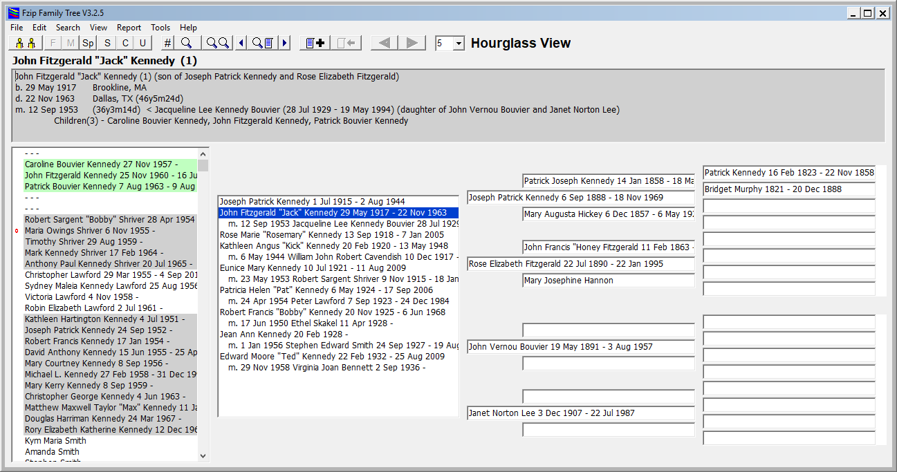
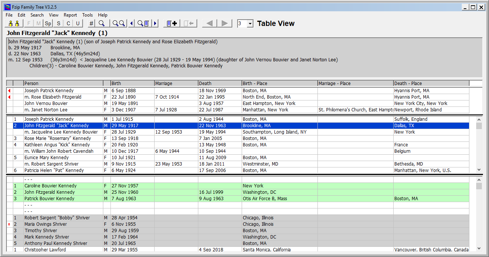
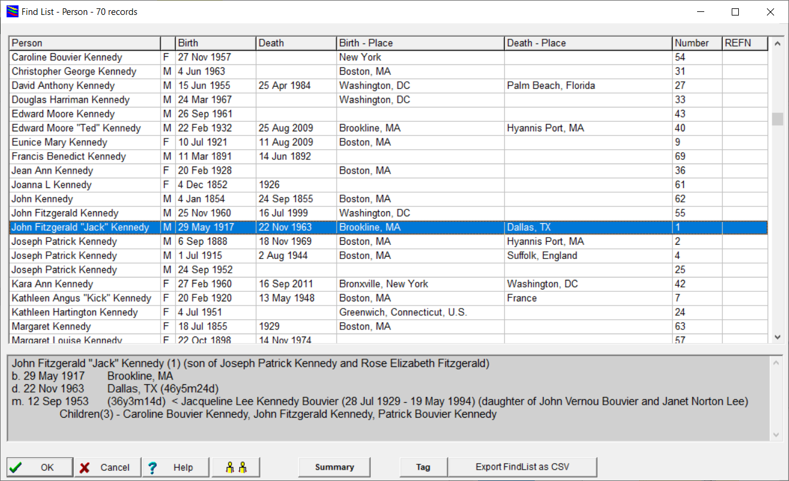
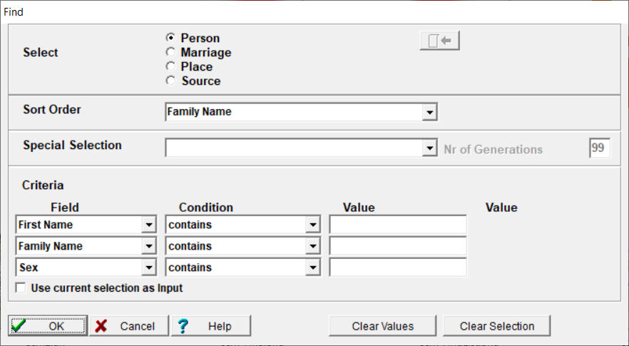

Fzip Family Tree
Fzip Family Tree
| Overview |
| Download |
| Languages |
| Free |
| Versions |
| Feedback |
| >>> FCASSft - FCASS Cost Allocation <<< |
A fast and easy way to manage and display your family tree with a Windows PC
Version 3.3.9 released 20 Aug 2023 What's New - program is Free to use
Fzip allows you to navigate easily around your family tree and manage your genealogy data.
Main Screen - Hourglass View
Hourglass View provides a combined Descendant and Ancestor View showing up to 6 generations and allows you to navigate around your family tree.

Main Screen - Table View
Table View provides a tabular view showing up to 4 generations and allows you to navigate around your family tree.

Fzip Family Tree is a highly featured, fast and easy to use genealogy package. The software allows a person to view, search, maintain genealogy details and report on family
trees.
It has EXTREMELY high speed GEDCOM import and export facilities making it suitable as a GEDCOM browser. It has very high speed search capabilities.
The Hourglass View screen shows up to 6 generations of people in an hourglass format and provides simple navigation around a family tree.
To select a person and show a summary - click on them. To move in the tree - Double click or click on  or
or  . To Edit - Right click or use shortcut buttons.
. To Edit - Right click or use shortcut buttons.
A simple search facility (Easy Find) is available to quickly and easily find people. In addition a powerful and fast search (Find) and sort facility can search by any field for People, Marriages, Places and Sources and includes a special selection to select Roots, Unrelated, Ancestors, Ancestor Roots, Descendants.
Entry and modification of data is simple and quick using full screen data entry.
Twenty five different reports are available including :-
- Screen Print
- Current Person
- Selected People
- Selected Marriages
- Selected Places
- Selected Sources
- LDS Ordinances
- Descendant Tree Report
- Family Group Report
- Descendant Box Chart
- Descendant Story
- Hourglass Box Chart
- Family Event
- Relatives List
- Ancestor Tree Report
- Pedigree Report
- Ancestor Story
- Ancestor Box Chart
- Ancestor Ahnentafel
- Family Summary Report
- Kinship Report
- Kinship Box Chart Report
- Possible Problems Report
- Statistics Summary
- Statistics Detail
In addition an Alphabetic Index report can be produced of people reported in the Descendant Tree, Box, Story and Family Group and Ancestor Tree and Story.
The Select reports have choices for sorting the data.
Reports can be directed to the screen, printer or file. Many reports can be output as RTF format files. All Reports can be produced in PDF using Microsft PDF as printer.
It has a Web page generation function (for static web pages) and has produced web pages for 250,000 people in half a minute.
There is a limit of 3,276,000 people per file. One person can have up to 600 children.
A bookmark facility is available with up to 20 bookmarks being available for use. These are stored with a genealogy file.
New Genealogy files are easily created and accessed and use little disk space. The number of genealogy files supported is
limited only by available disk space.
More than one copy of the program can be running at a time on a machine so that multiple files may be open at one time.
When a genealogy file is saved a backup of the previous version is stored.
The main differences between this software and many others are :-
a. Main screen that provides a good overall context of the current person you are focussed on - either Hourglass or Table View
b. Ease of data entry
c. Speed of displaying, searching, importing and exporting data
d. Powerful searching and sorting
e. Ability to run the program from a USB key
f. Uncluttered screens
g. Small genealogy files
h. Small, simple and fast installation
i. No internet access required to run
j. All data stored locally on PC
TOP
Find List Screen
Find List Screen displays the result of a Find of Person, Relationship/Marriage, Place or Source.
The following is for a Find of Person.

TOP
Find Screen
Find Screen accepts entry of a selection to display on the FindList. It can be used to find - Person, Relationship/Marriage, Place or Source.

Sort orders :-
- Person - Family Name, First Name, Date of Birth, Birthday, Date of Death, Person Number, Reference Number
- Marriage - Family Name, Date of Marriage, Marriage Number
- Place - Place (then date), Date (then Place), Place (then Family Name), Family Name (then Place), Family Name (then Date), Date (then Family Name)
with option to reverse Place e.g. Newington,Kent,England will be sorted as England,Kent,Newington
- Source - Source (then date), Date (then Source), Source (then Family Name), Family Name (then Source)
Special Selections :-
- Descendants
- Descendants and Spouses
- Ancestors
- Ancestor Roots
- Roots
- UnRelated
- Split no Spouse
- Remaining
- mtDNA Descendant
- Male Line Descendant
- Male Line Descendant, Spouses
- Male Line Descendant, Spouses and Parents
- Female Line Descendant, Spouses
- Female Line Descendant, Spouses and Parents
- Roots no parents
TOP
Registration and Availability
Fzip Family Tree is free to use. The program does not need to be registered to use.
This version of Fzip runs on Windows XP to Windows 10.
For further information please e-mail the developer Andrew Croft at acroft@fzipft.com
TOP
Language Support
The program is available with English, Italian, Dutch, Polish, German, French, Spanish, Afrikaans, Slovak, Czech, Portuguese, Icelandic and Hungarian translations. (Help only exists in English.)
In version 3.1 all translations (except Italian) have been brought up to date using Google Translate. Hungarian is new in version 3.3.3.
Thanks to Ercole di Matteo for the Version 3 Italian translation. Ercole Di Matteo
Thanks to Peter Tameris for the Dutch translation Version 1 and Version 2. Peter Tameris
You can select the language to use as you require, and change to another while you are running the program.
If you wish to customise the program in another language please contact the author.
TOP
Download
Fzip V3.3.9 - click on the EXE name >>FzipFT_SetupV3.3.9.exe<< to download the program installation. Size is 859KB. Date 20 Aug 2023.
When you run the file to install it, Windows will identify it as not a trusted publisher. Sorry,that's how it is.
To install, you will need to click on "More Info" link and then on "Run Anyway" button.
To assist language translation - Fzip Language Translation Tool FzipLang_SetupV3.2.3.exe size is 472KB Date 18 Dec 2022.
TOP
Feedback
It is always good to get some feedback on the program.
This can be used by me to identify changes, or provide me with a perspective that I don't have.
So please, drop me an email with some constructive comments. email: acroft@fzipft.com
TOP
Other Links
TOP
Limitations
Functional support for Sources is limited. Program supports limited set of fields.
Limited to managing 3.27 million people per file. No limit to number of files.
TOP